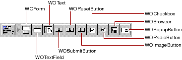

Table of Contents
Table of Contents  Next Section
Table of Contents
Next Section
Table of Contents  Previous Section
Previous Section
In WebObjects Builder, you create form elements by clicking one of the buttons in the Form Elements portion of the switchable toolbar (or using their menu equivalents).

All the form elements you create in the toolbar are dynamic equivalents of standard HTML elements. You can convert any dynamic form element to its static equivalent (and vice versa) by using the Inspector (see "Dynamic and Static Inspectors").
Most form elements have a value attribute that represents the information entered by the user. You bind this attribute to a variable so that your application can work with it. Others, such as WOSubmitButton, WOImageButton, or WOForm itself, don't receive information but have an action attribute representing an action to be taken when the form is submitted. You bind form-based elements by the process described in "Binding Elements".
Usually you create a WOForm element to contain other form elements, including buttons. The submit and reset buttons will apply to all other elements inside the same form.
Table of Contents Next Section